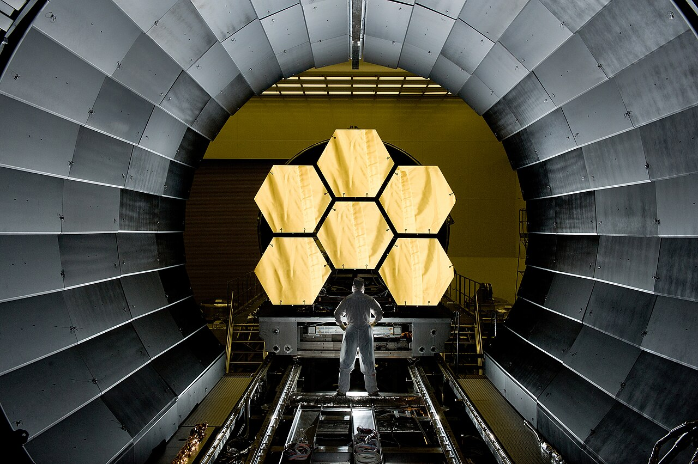
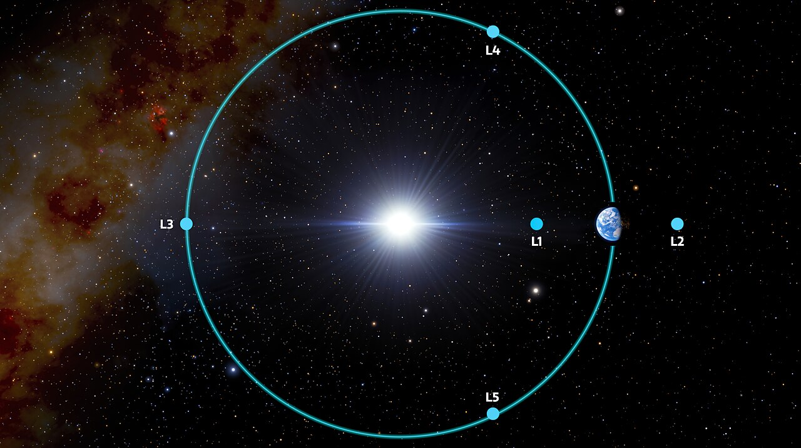

為什麼韋伯望遠鏡要到 150 萬公里外，還得定期推自己一把？
L2 並非穩定的停車位。韋伯用持續的軌道修正，換取遮熱、散熱與觀測條件。
2021 年 12 月 25 日，亞利安五號火箭從法屬圭亞那升空，載著詹姆斯・韋伯太空望遠鏡。它約三天便飛到月球軌道的距離，卻用了約一個月抵達日地 L2 附近。那裡距地球約 150 萬公里，又不是穩定的位置，望遠鏡必須定期點火修正才能留在預定軌道。為什麼要把望遠鏡送到這樣的地方？

一、三體問題留下的五個「停車位」
故事要從 1772 年說起。數學家拉格朗日（Joseph-Louis Lagrange）在得獎論文〈三體問題試論〉中回答了一個問題：如果太陽和地球這樣的兩個大天體在運轉，有沒有哪些位置，能讓第三個小物體跟著它們一起轉、卻保持相對位置不變？他找到了五個解，後人稱為拉格朗日點。在這些點上，兩個大天體的引力合起來，恰好等於小物體跟隨它們運轉所需的向心力。
五個點的「性格」不同。L1、L2、L3 落在兩個大天體的連線上，本質上像把彈珠放在馬鞍中央：位置對了能停，但輕輕一碰就往下滑。NASA 的資料指出，日地系統的 L1 與 L2 在大約 23 天的時間尺度上就是不穩定的，太空船必須定期修正軌道才能留下。[2]L4、L5 則位於正三角形的頂點，只要兩個大天體的質量比超過 24.96，它們就是穩定的。
這些點不是抽象數學。日地 L1（朝向太陽側 150 萬公里）長期駐守著 SOHO、DSCOVR 等太陽觀測衛星；日地 L2（背陽側 150 萬公里）在韋伯之前，已經接待過 WMAP、赫雪爾（Herschel）與普朗克（Planck）等天文衛星。

二、L2 如何幫韋伯保持低溫？
關鍵在於韋伯是一台紅外線望遠鏡，而溫暖的物體也會發出紅外輻射。望遠鏡要捕捉宇宙深處極微弱的紅外訊號，自己卻不能「發燙」，太陽、地球、月球，甚至望遠鏡自己的電子設備，都是干擾源。L2 的幾何正好解決這個問題：在那裡，太陽、地球和月球位於遮陽罩的同一側，於是一面巨型遮陽罩就能同時擋住三者。NASA 形容這面五層 Kapton 薄膜（每層只有保鮮膜厚、彼此不接觸）構成的遮陽罩，相當於防曬係數 SPF 一百萬。
效果如何？遮陽罩向陽面可達攝氏 85 度（358 K），背陽的鏡面與儀器側則降到約零下 233 度（40 K），比南極洲測得的地球最低溫（零下 89 度）還冷一百多度；看得更深的中紅外儀器 MIRI，還靠兩級製冷機壓到 7 K，只比絕對零度高 7 度。[3]NASA 也說明，若不靠這種「開放式設計」被動散熱、改用冷媒，得帶上好幾噸冷媒，用完任務就結束。
韋伯其實和地球一樣繞著太陽公轉，它不是「停」在太空某處，而是透過 L2 的力學與地球保持同步，因此從地球看，它總在午夜方向約 150 萬公里外。而且它也不是停在 L2 這個點上，而是繞著 L2 走一圈約六個月的光暈軌道（halo orbit），與 L2 的距離在 25 萬到 83.2 萬公里之間擺盪，規模接近月球繞地球的軌道。這條軌道讓它永遠避開地球與月球的陰影，不像哈伯每 90 分鐘就進出地球陰影一次，因此不必因進出地球陰影而中斷觀測，但這不代表每一刻都在曝光；加上它相對地球的位置固定，NASA 的深空網路（位於澳洲、西班牙、加州的三座天線）在日常運作中，每天最多安排兩次上傳指令與下載資料。代價是視野受限：任何一天只能看到約 39% 的天空，要半年才能輪完全天。
三、燃料如何影響它的壽命？
這正是關鍵：這個「弱點」是設計時就知道的。L2 是重力位能上的鞍點：太空船不點火修正，就會慢慢漂離。STScI 的任務文件記載，韋伯的光暈軌道大、速度慢（約每秒 1 公里），本身衰減得慢；但那面網球場大的遮陽罩持續承受太陽光壓，不斷把望遠鏡往外推，因此平均約每 42 天要執行一次軌道維持點火（間隔至少 21 天，因為需要 19 天的追蹤資料才能算準軌道），比其他拉格朗日點任務（典型每年 3 到 4 次）更頻繁。
燃料是設計上最明確的壽命約束：推進劑耗盡後，軌道維持與姿態控制都無以為繼。當然，實際壽命還可能受零件老化、意外故障等因素影響，NASA 公告也保留了這個但書。無論如何，越早節省燃料，任務就能維持得越久，所以 2021 年 12 月 29 日 NASA 與 ESA 的一則公告才那麼重要：亞利安五號火箭的入軌精度超出需求，韋伯第一次中途修正只點火 65 分鐘、增加每秒 20 公尺速度，第二次只補了每秒 2.8 公尺，省下的推進劑讓預期壽命「顯著超過 10 年」，而任務的最低基線只有 5 年。發射時還有一個連帶好處：因為姿態一開始就對了，太陽能板在發射後約 29 分鐘就提前自動展開。
順帶一提那個「三天到月球、一個月到 L2」的細節：NASA 把它比作騎腳踏車上坡，一開始用力踩，之後大半路程靠滑行減速，剛好「滑」到山頂。韋伯不是全速飛行一個月，而是把大部分時間花在優雅地減速就位。
四、它為什麼不能像哈伯一樣等人來修？
哈伯位於低地球軌道；韋伯則遠在日地 L2 附近，而且沒有像哈伯那樣的例行維修設計。NASA 的常見問題集說明，專案早期評估過載人、機器人維修及其他方案，但認為其潛在好處不足以抵銷增加的任務複雜度、重量與成本。[7]這是當時的設計取捨，不表示未來任何技術都不可能接近韋伯，也不表示燃料能單獨決定它還能工作多久。
同樣不能把 L2 的好處推廣到所有任務。L4、L5 在符合條件的理想化模型中可維持穩定，卻不提供韋伯所需的相同遮熱幾何。選址不是找一個抽象上最穩的點，而是比較觀測需求與維持成本。
五、把「靠微調維持的平衡」帶到另一個領域
可以做一個不涉及物理定律的思想練習：想像你安排了一個每天都能完成的工作計畫。若計畫留有餘裕，小幅延誤可能自行消化；若它必須每天額外加班才能維持，表面上的準時其實需要持續投入。這不是拉格朗日點的數學模型，只是借用「狀態不變，不等於沒有維持成本」這個觀察。
類比的邊界也很重要。軌道修正可由力學與追蹤資料計算；人的工作受疲勞、選擇和外部需求影響，不能直接套用同一套方程式。韋伯提供的問題不是「穩定一定比較好」，而是：為了達到目標，我們願意持續投入什麼，又如何知道這份投入是否值得？
查證資料來源7 項
實際支持文中事實主張的來源，逐條標註支持的內容；文內如有 [數字] 標記，對應此處編號。
- Webb's Orbit（NASA Science，韋伯任務官方頁） ↗
- What is a Lagrange Point?（NASA Science／WMAP 團隊 Neil Cornish，2018-03-27） ↗
- How Does Webb Stay Cold?（NASA Science，2025-09-03 更新） ↗
- JWST Orbit（太空望遠鏡科學研究所 STScI 任務文件） ↗
- NASA Says Webb's Excess Fuel Likely to Extend its Lifetime Expectations（NASA Webb 任務團隊部落格，2021-12-29） ↗
- Precise Ariane 5 launch likely to extend Webb's expected lifetime（歐洲太空總署，2021-12-29） ↗
- Webb FAQs（NASA Science 常見問題全集） ↗
延伸探討
把故事帶回自己的思考
下次看到「某探測器抵達 L2」的新聞，試著追問三件事：它是停在那個點上，還是繞著點走？它靠什麼留下來，天生穩定，還是燃料？以及，它用這個代價換到了什麼只有那裡才有的條件？再找一找：SOHO、Gaia、Euclid 這些任務各自停在哪個拉格朗日點，理由和韋伯相同嗎？